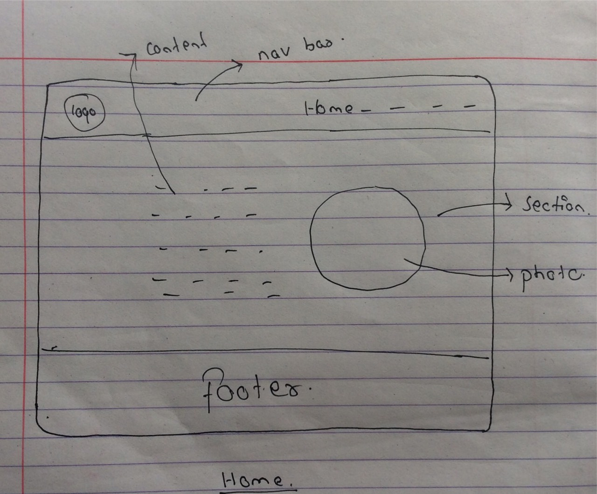
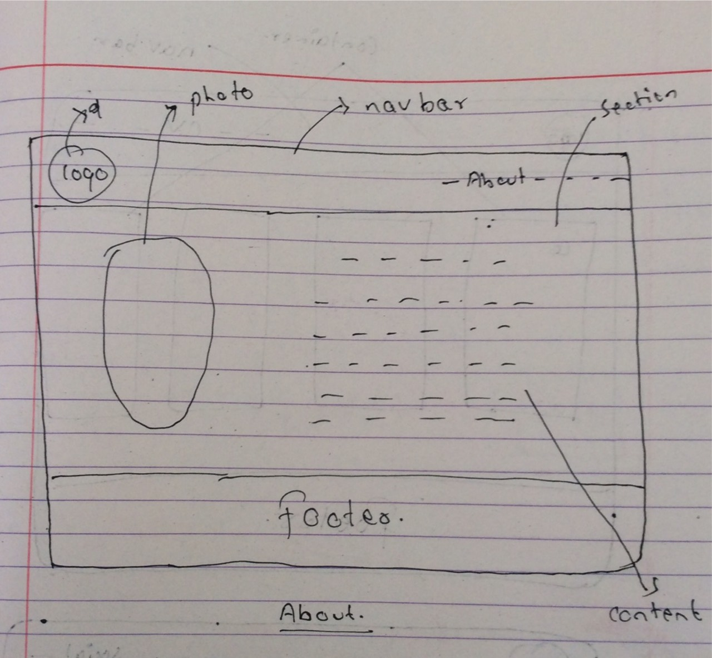
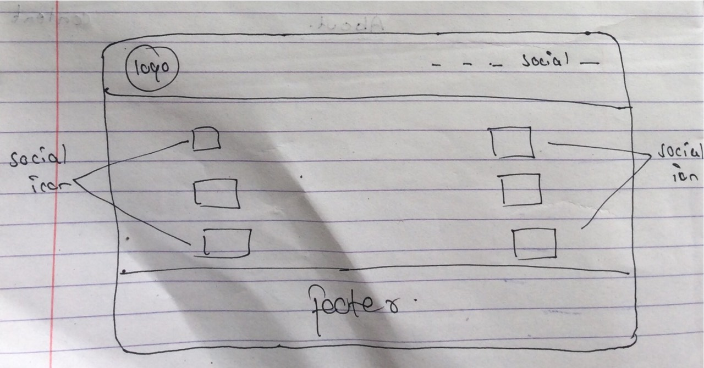
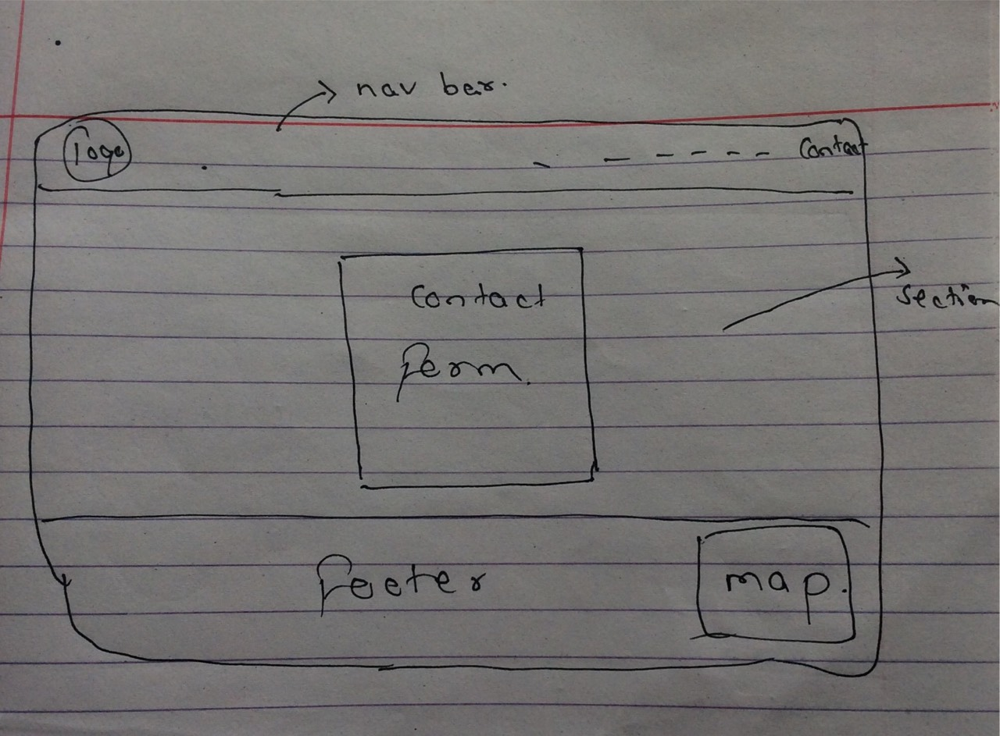
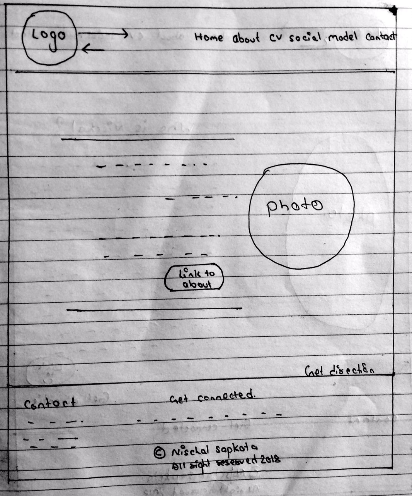
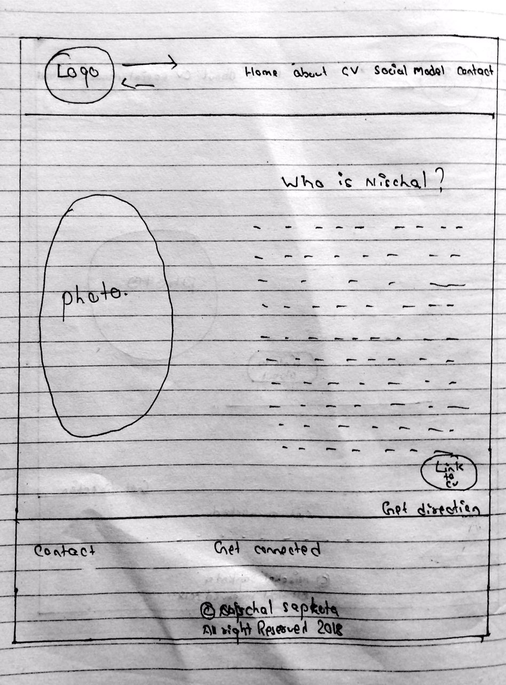
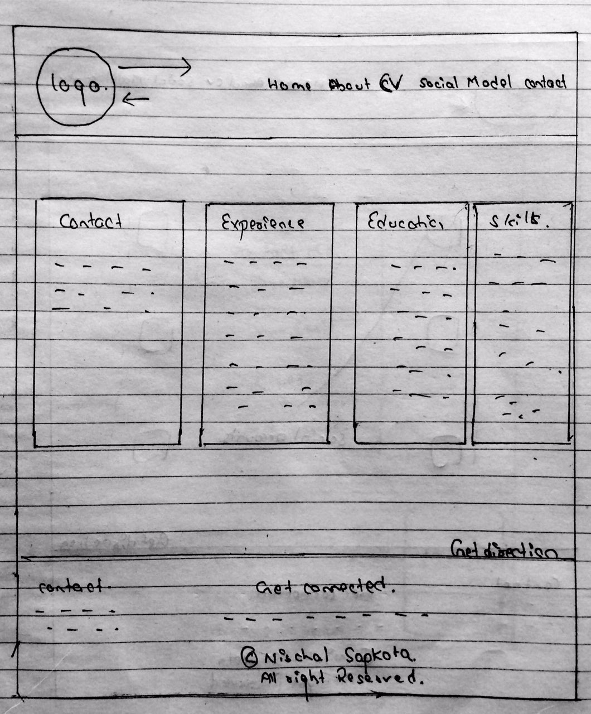
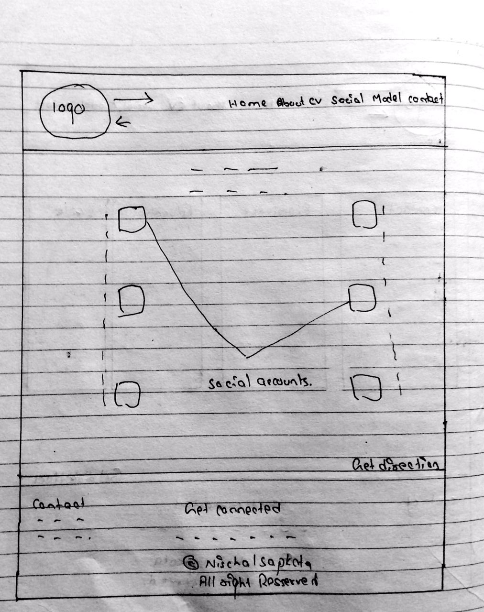
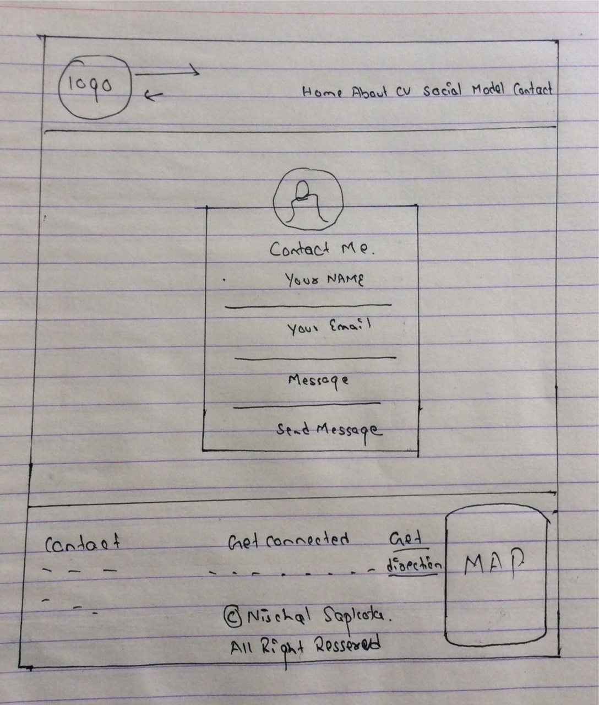
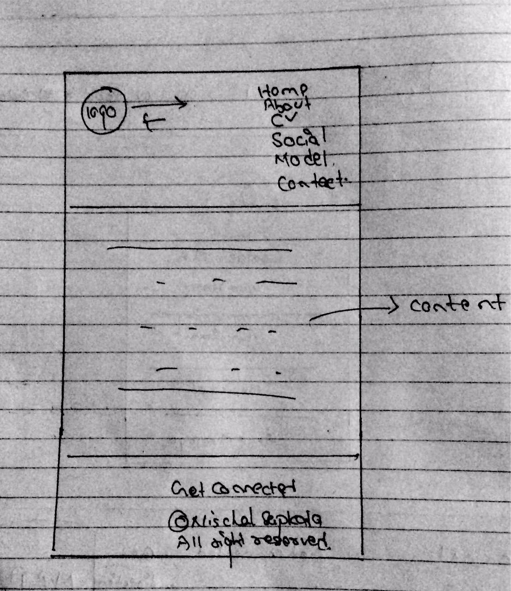

INTRODUCTION
EXPERIENCE
During this 12 weeks of webdevelopment project, I came to be quite good in web development. My level of skills rised from the bottom to the top.At first I was unknown to HTML and CSS.But throughout this 12 week of intensive course I came to know more about the HTML and CSS with in the short period of time. Now I am able to design a good web page, which you just saw an example of.Thus the webpages that I have made, shows the level of skill and knowledge that I posses in Web Development.There are 6 pages in my web page. The first page is called the landing page, it contains navigation bar,footer and section.As navigation bar and footer is common for all of the pages.The second page is About , it contains detail and biography about me and it also shows my profesional aspiration as a developer. About is followed by CV, CV contains overall deatail about me .It describes my experience, education and skills that I have.It also provides a small contact list with overall contact details of me.Similarly Social contains the social app icon which links to my different social apps account.Contact page contains the static form through which people can send me message.It also contains the map of my location embeded in footer.In this way the 12 week intensive learning helped me to develop my own page and helped to sharp knowledge on HTML and CSS.
UI DESIGN
These are some of the websites that I used as a reference to get a collective idea to develop my own webpages.
(note : To visit these webpages click on the images)

This website looked very Creative to me.So, I used the idea that was used to design this website to look great.I was inspired by the line below the navigation bar.Due to the help of this website I have designed my own website with line below the header making my webpage more attractive.

Similarly , the concept used in this websites looks stunning. The bacground image is ovelayed with the background color setting the opacity value. As , I am a great fan of a light black color that is transparent one. I got more than one reason to use this concept in my webpages. Hence, with thes two websites I came to an conclusive end of creating my interface design.
SKETCHES
These are the sketches I did to make my design.
- Homepage

- Biography

- CV

- Social

- Contact

Wireframes
Finally these are the wireframes of my website that I use to create my page.
- Home

- About

- CV

- Soical

- Contact

- Moible(Responsive)

Logo for the pages

this logo created by me with the help of online logo designer.This logo is created to make the page more attractive and user friendly.
It can be the center of attraction to the visitor. Animation isto the logo, it keeps on moving to linear line.
This site was used to create this logo.
https://studio.tailorbrands.com
RESPONSIVE PAGES
- Home

- About

- CV

- Social

- Contact

VALIDATION
Validation that I have done for my webpages.

- Home

- CV

- About

- Social

- Contact

- CSS

LIVE URL TO MY PAGE
https://atokpas.github.io/new-submit/
CONCLUSION
Through this many intensive course in web development, It helped me to be a good web develop with HTML and CSS. This 12 week course helped me to be a good desinger and analysier. Through this assignment work we came to know the valid html code and CSS that has be accepted world wide.The webpages I have created is the example that shows my skills and acknowledgement in web development.Hence, in all through out this report and intensive course I came to be a good designer with HTML and CSS.
REFERENCES
[ONLINE] AVAILABLE AT: https://images3.alphacoders.com/853/85305.jpg
[ONLINE] AVAILABLE AT: https://fontawesome.com/icons/facebook-f?style=brands [ACCESSED 13 APRIL 2018
css3 - CSS smooth bounce animation - Stack Overflow. 2018. css3 - CSS smooth bounce animation - Stack Overflow. [ONLINE] Available at: https://stackoverflow.com/questions/32306089/css-smooth-bounce-animation. [Accessed 22 April 2018].
How To Create Social Media Buttons. 2018. How To Create Social Media Buttons. [ONLINE] Available at: https://www.w3schools.com/howto/howto_css_social_media_buttons.asp. [Accessed 1 April 2018].
[ONLINE] Available at:https://images3.alphacoders.com/853/85305.jpg
Tailor Brands. 2018. Tailor Brands - Instant Logo Maker & Online Logo Design. [ONLINE] Available at: https://studio.tailorbrands.com/business/14790627/wizard/edit/color/edit?. [Accessed 17 April 2018].
2018. . [ONLINE] Available at: https://preview.freelogodesign.org/?lang=EN&logo=ce1024d4-ca1f-4572-aa1b-3372ead2b872. [Accessed 2 April 2018]
Groupe, G., Doom: Doom 3, Id Tech 1, Doom II: Hell on Earth, Bestiaire de Doom, Id Tech 4, Final Doom, Doom 3: Resurrection of Evil, Whe. (s.n.).